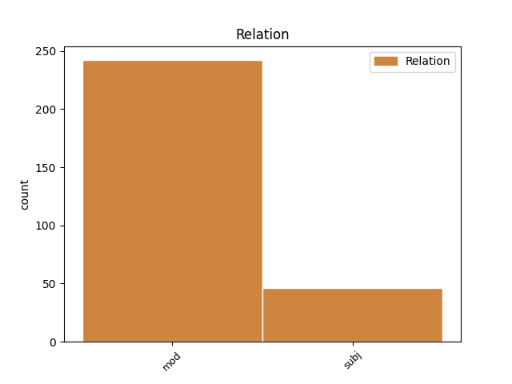
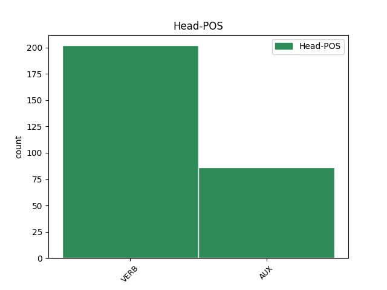
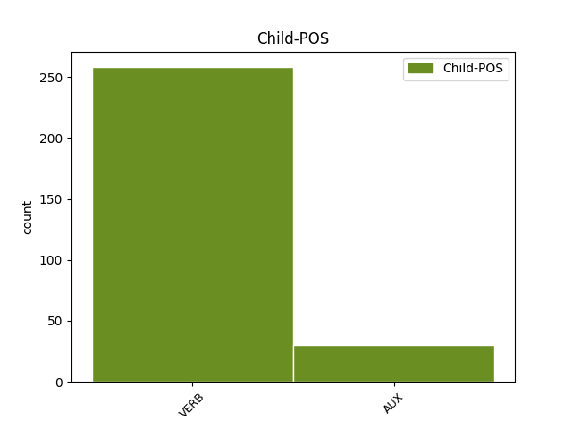

Distribution of features within this leaf



Agreement Rules sorted by frequency.
- When the dependent token is the modifer(mod) of the head token, and the dependent token is VERB.
1 The _ _ _ _ 0 _ _ _
2 bar _ _ _ _ 0 _ _ _
3 was _ _ _ _ 0 _ _ _
4 a _ _ _ _ 0 _ _ _
5 chessboard _ _ _ _ 0 _ _ _
6 of _ _ _ _ 0 _ _ _
7 couples _ _ _ _ 0 _ _ _
8 manoeuvring manoeuvre VERB ING Tense=Pres|VerbForm=Part 0 _ _ _
9 Martinis _ _ _ _ 0 _ _ _
10 and _ _ _ _ 0 _ _ _
11 waiters _ _ _ _ 0 _ _ _
12 high-carrying high-carry VERB ING Tense=Pres|VerbForm=Part 8 mod _ _
13 chrome _ _ _ _ 0 _ _ _
14 trays _ _ _ _ 0 _ _ _
15 . _ _ _ _ 0 _ _ _
1 Mrs _ _ _ _ 0 _ _ _
2 Weasley _ _ _ _ 0 _ _ _
3 was _ _ _ _ 0 _ _ _
4 marching _ _ _ _ 0 _ _ _
5 across _ _ _ _ 0 _ _ _
6 the _ _ _ _ 0 _ _ _
7 yard _ _ _ _ 0 _ _ _
8 , _ _ _ _ 0 _ _ _
9 scattering _ _ _ _ 0 _ _ _
10 chickens _ _ _ _ 0 _ _ _
11 , _ _ _ _ 0 _ _ _
12 and _ _ _ _ 0 _ _ _
13 for _ _ _ _ 0 _ _ _
14 a _ _ _ _ 0 _ _ _
15 short _ _ _ _ 0 _ _ _
16 , _ _ _ _ 0 _ _ _
17 plump _ _ _ _ 0 _ _ _
18 , _ _ _ _ 0 _ _ _
19 kind-faced _ _ _ _ 0 _ _ _
20 woman _ _ _ _ 0 _ _ _
21 , _ _ _ _ 0 _ _ _
22 it _ _ _ _ 0 _ _ _
23 was be AUX PAST Mood=Ind|Number=Sing|Person=1|Tense=Past|VerbForm=Fin 0 _ _ _
24 remarkable _ _ _ _ 0 _ _ _
25 how _ _ _ _ 0 _ _ _
26 much _ _ _ _ 0 _ _ _
27 she _ _ _ _ 0 _ _ _
28 looked look VERB PAST Mood=Ind|Tense=Past|VerbForm=Fin 23 subj _ _
29 like _ _ _ _ 0 _ _ _
30 a _ _ _ _ 0 _ _ _
31 saber-toothed _ _ _ _ 0 _ _ _
32 tiger _ _ _ _ 0 _ _ _
33 . _ _ _ _ 0 _ _ _
1 My _ _ _ _ 0 _ _ _
2 parents _ _ _ _ 0 _ _ _
3 were _ _ _ _ 0 _ _ _
4 rowing _ _ _ _ 0 _ _ _
5 and _ _ _ _ 0 _ _ _
6 when _ _ _ _ 0 _ _ _
7 they _ _ _ _ 0 _ _ _
8 were be AUX PAST Mood=Ind|Tense=Past|VerbForm=Fin 12 mod _ SpaceAfter=No
9 n't _ _ _ _ 0 _ _ _
10 rowing _ _ _ _ 0 _ _ _
11 they _ _ _ _ 0 _ _ _
12 were be AUX PAST Mood=Ind|Tense=Past|VerbForm=Fin 0 _ _ _
13 snapping _ _ _ _ 0 _ _ _
14 and _ _ _ _ 0 _ _ _
15 when _ _ _ _ 0 _ _ _
16 they _ _ _ _ 0 _ _ _
17 were _ _ _ _ 0 _ _ _
18 n't _ _ _ _ 0 _ _ _
19 snapping _ _ _ _ 0 _ _ _
20 they _ _ _ _ 0 _ _ _
21 were _ _ _ _ 0 _ _ _
22 planning _ _ _ _ 0 _ _ _
23 a _ _ _ _ 0 _ _ _
24 party _ _ _ _ 0 _ _ _
25 , _ _ _ _ 0 _ _ _
26 holding _ _ _ _ 0 _ _ _
27 a _ _ _ _ 0 _ _ _
28 party _ _ _ _ 0 _ _ _
29 , _ _ _ _ 0 _ _ _
30 cleaning _ _ _ _ 0 _ _ _
31 up _ _ _ _ 0 _ _ _
32 after _ _ _ _ 0 _ _ _
33 a _ _ _ _ 0 _ _ _
34 party _ _ _ _ 0 _ _ _
35 . _ _ _ _ 0 _ _ _
1 What _ _ _ _ 0 _ _ _
2 I _ _ _ _ 0 _ _ _
3 have have AUX PRES-AUX Mood=Ind|Tense=Pres|VerbForm=Fin 11 subj _ _
4 been _ _ _ _ 0 _ _ _
5 hearing _ _ _ _ 0 _ _ _
6 about _ _ _ _ 0 _ _ _
7 the _ _ _ _ 0 _ _ _
8 representative _ _ _ _ 0 _ _ _
9 in _ _ _ _ 0 _ _ _
10 Nicaragua _ _ _ _ 0 _ _ _
11 is be AUX PRES Mood=Ind|Number=Sing|Person=3|Tense=Pres|VerbForm=Fin 0 _ _ _
12 indicative _ _ _ _ 0 _ _ _
13 that _ _ _ _ 0 _ _ _
14 the _ _ _ _ 0 _ _ _
15 project _ _ _ _ 0 _ _ _
16 had _ _ _ _ 0 _ _ _
17 not _ _ _ _ 0 _ _ _
18 been _ _ _ _ 0 _ _ _
19 properly _ _ _ _ 0 _ _ _
20 closed _ _ _ _ 0 _ _ _
21 down _ _ _ _ 0 _ _ _
22 . _ _ _ _ 0 _ _ _
Disagree Examples:
1 When _ _ _ _ 0 _ _ _
2 you _ _ _ _ 0 _ _ _
3 open _ _ _ _ 0 _ _ _
4 a _ _ _ _ 0 _ _ _
5 page _ _ _ _ 0 _ _ _
6 , _ _ _ _ 0 _ _ _
7 Access _ _ _ _ 0 _ _ _
8 reads _ _ _ _ 0 _ _ _
9 the _ _ _ _ 0 _ _ _
10 connection _ _ _ _ 0 _ _ _
11 file _ _ _ _ 0 _ _ _
12 that _ _ _ _ 0 _ _ _
13 is _ _ _ _ 0 _ _ _
14 linked _ _ _ _ 0 _ _ _
15 to _ _ _ _ 0 _ _ _
16 the _ _ _ _ 0 _ _ _
17 page _ _ _ _ 0 _ _ _
18 , _ _ _ _ 0 _ _ _
19 and _ _ _ _ 0 _ _ _
20 based base VERB PASS Tense=Past|VerbForm=Part|Voice=Pass 29 mod _ _
21 on _ _ _ _ 0 _ _ _
22 the _ _ _ _ 0 _ _ _
23 contents _ _ _ _ 0 _ _ _
24 of _ _ _ _ 0 _ _ _
25 the _ _ _ _ 0 _ _ _
26 connection _ _ _ _ 0 _ _ _
27 file _ _ _ _ 0 _ _ _
28 , _ _ _ _ 0 _ _ _
29 connects connect VERB PRES Mood=Ind|Number=Sing|Person=3|Tense=Pres|VerbForm=Fin 0 _ _ _
30 the _ _ _ _ 0 _ _ _
31 page _ _ _ _ 0 _ _ _
32 to _ _ _ _ 0 _ _ _
33 the _ _ _ _ 0 _ _ _
34 appropriate _ _ _ _ 0 _ _ _
35 data _ _ _ _ 0 _ _ _
36 source _ _ _ _ 0 _ _ _
37 . _ _ _ _ 0 _ _ _
1 A _ _ _ _ 0 _ _ _
2 page _ _ _ _ 0 _ _ _
3 created create VERB PASS Tense=Past|VerbForm=Part|Voice=Pass 0 _ _ _
4 using use VERB ING Tense=Pres|VerbForm=Part 3 mod _ _
5 Microsoft _ _ _ _ 0 _ _ _
6 Access _ _ _ _ 0 _ _ _
7 2000 _ _ _ _ 0 _ _ _
8 must _ _ _ _ 0 _ _ _
9 be _ _ _ _ 0 _ _ _
10 converted _ _ _ _ 0 _ _ _
11 before _ _ _ _ 0 _ _ _
12 it _ _ _ _ 0 _ _ _
13 can _ _ _ _ 0 _ _ _
14 be _ _ _ _ 0 _ _ _
15 used _ _ _ _ 0 _ _ _
16 with _ _ _ _ 0 _ _ _
17 Access _ _ _ _ 0 _ _ _
18 2002 _ _ _ _ 0 _ _ _
19 . _ _ _ _ 0 _ _ _
1 Filtering filter VERB ING Tense=Pres|VerbForm=Part 0 _ _ _
2 based base VERB PASS Tense=Past|VerbForm=Part|Voice=Pass 1 mod _ _
3 on _ _ _ _ 0 _ _ _
4 the _ _ _ _ 0 _ _ _
5 data _ _ _ _ 0 _ _ _
6 in _ _ _ _ 0 _ _ _
7 one _ _ _ _ 0 _ _ _
8 cell _ _ _ _ 0 _ _ _
9 ( _ _ _ _ 0 _ _ _
10 Filter _ _ _ _ 0 _ _ _
11 by _ _ _ _ 0 _ _ _
12 Selection _ _ _ _ 0 _ _ _
13 ) _ _ _ _ 0 _ _ _
1 Who _ _ _ _ 0 _ _ _
2 he _ _ _ _ 0 _ _ _
3 was be AUX PAST Mood=Ind|Number=Sing|Person=1|Tense=Past|VerbForm=Fin 14 subj _ SpaceAfter=No
4 , _ _ _ _ 0 _ _ _
5 where _ _ _ _ 0 _ _ _
6 he _ _ _ _ 0 _ _ _
7 came _ _ _ _ 0 _ _ _
8 from _ _ _ _ 0 _ _ _
9 , _ _ _ _ 0 _ _ _
10 and _ _ _ _ 0 _ _ _
11 what _ _ _ _ 0 _ _ _
12 he _ _ _ _ 0 _ _ _
13 did _ _ _ _ 0 _ _ _
14 are be VERB PRES Mood=Ind|Tense=Pres|VerbForm=Fin 0 _ _ _
15 of _ _ _ _ 0 _ _ _
16 no _ _ _ _ 0 _ _ _
17 great _ _ _ _ 0 _ _ _
18 importance _ _ _ _ 0 _ _ _
19 . _ _ _ _ 0 _ _ _
1 Nearly _ _ _ _ 0 _ _ _
2 every _ _ _ _ 0 _ _ _
3 day _ _ _ _ 0 _ _ _
4 , _ _ _ _ 0 _ _ _
5 rain _ _ _ _ 0 _ _ _
6 or _ _ _ _ 0 _ _ _
7 shine _ _ _ _ 0 _ _ _
8 , _ _ _ _ 0 _ _ _
9 hot _ _ _ _ 0 _ _ _
10 or _ _ _ _ 0 _ _ _
11 cold _ _ _ _ 0 _ _ _
12 , _ _ _ _ 0 _ _ _
13 he _ _ _ _ 0 _ _ _
14 would _ _ _ _ 0 _ _ _
15 leave _ _ _ _ 0 _ _ _
16 his _ _ _ _ 0 _ _ _
17 apartment _ _ _ _ 0 _ _ _
18 to _ _ _ _ 0 _ _ _
19 walk _ _ _ _ 0 _ _ _
20 through _ _ _ _ 0 _ _ _
21 the _ _ _ _ 0 _ _ _
22 city _ _ _ _ 0 _ _ _
23 – _ _ _ _ 0 _ _ _
24 never _ _ _ _ 0 _ _ _
25 really _ _ _ _ 0 _ _ _
26 going _ _ _ _ 0 _ _ _
27 anywhere _ _ _ _ 0 _ _ _
28 , _ _ _ _ 0 _ _ _
29 but _ _ _ _ 0 _ _ _
30 simply _ _ _ _ 0 _ _ _
31 going go VERB ING Tense=Pres|VerbForm=Part 0 _ _ _
32 wherever _ _ _ _ 0 _ _ _
33 his _ _ _ _ 0 _ _ _
34 legs _ _ _ _ 0 _ _ _
35 happened happen VERB PAST Mood=Ind|Tense=Past|VerbForm=Fin 31 mod _ _
36 to _ _ _ _ 0 _ _ _
37 take _ _ _ _ 0 _ _ _
38 him _ _ _ _ 0 _ _ _
39 . _ _ _ _ 0 _ _ _